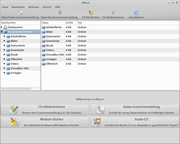
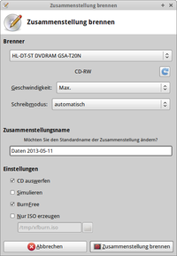
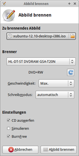
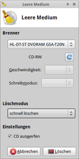
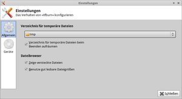

Xfburn
Dieser Artikel wurde für die folgenden Ubuntu-Versionen getestet:
Ubuntu 16.04 Xenial Xerus
Ubuntu 14.04 Trusty Tahr
Zum Verständnis dieses Artikels sind folgende Seiten hilfreich:
Xfburn ist ein einfaches und ressourcenschonendes Brennprogramm für CDs und DVDs, welches in der Programmiersprache C geschrieben ist und auf den libburnia-Bibliotheken basiert. Mit dem Programm ist es möglich
Daten- und Audio-CDs zu erstellen
CD-RWs zu löschen
CD/DVD-Abbildder (.iso) zu erstellen und zu brennen.
Das Programm ist unter der GNU General Public License veröffentlicht. Ab Xubuntu 10.10 löste Xfburn das langjährige Standardprogramm Brasero zum Brennen von CDs und DVDs ab, unter Lubuntu ist es ebenfalls bereits vorinstalliert.
Installation¶
|  |
| Xfburn |
Xfburn kann über das folgende Paket installiert [1] werden:
xfburn
 mit apturl
mit apturl
Paketliste zum Kopieren:
sudo apt-get install xfburn
sudo aptitude install xfburn
Um mit Xfburn eine Audio-CD aus MP3-Dateien zu brennen, müssen zusätzlich die entsprechenden Codecs installiert werden:
gstreamer0.10-plugins-ugly (universe, installiert Plugins für Formate, die wegen ihrer Lizenz nicht mit Ubuntu ausgeliefert werden können)
mit apturl
Paketliste zum Kopieren:
sudo apt-get install gstreamer0.10-plugins-ugly
sudo aptitude install gstreamer0.10-plugins-ugly
Bedienung¶
Nach erfolgreicher Installation kann das Brennprogramm über den Menü-Eintrag "Zubehör -> Xfburn" oder "Unterhaltungsmedien -> Xfburn" (Lubuntu) oder "Multimedia -> Xfburn" (Xubuntu) aufgerufen werden.
Nach dem Start des Programms präsentieren sich dem Nutzer in einer aufgeräumten Oberfläche Schaltflächen zum Brennen eines CD-Abbilds, einer Daten-Zusammenstellung, zum Löschen eines wiederbeschreibbaren Mediums sowie zum Erstellen einer Audio-CD. Die Bedienung erfolgt durch eine intuitive Benutzerführung und per Drag'n'Drop.
| Erläuterung der Programmsymbole | |
| Symbol | Erklärung |
| Daten-CD brennen oder CD-Abbild erstellen | |
| Audio-CD brennen | |
| CD-Abbild brennen | |
| Löschen eines Mediums | |
 | Markierte Daten zur Zusammenstellung hinzufügen |
 | Markierte Datei/Verzeichnis aus Zusammenstellung entfernen |
| In der Zusammenstellung ein neues Verzeichnis erstellen | |
 | Zusammenstellung komplett leeren |
Daten-Zusammenstellung brennen¶
Beim Klick auf die Schaltfläche "Daten-Zusammenstellung" oder den Menüpunkt "Datei -> Neue Daten-Zusammenstellung" öffnet sich im unteren Teil des Programmfensters ein neuer Reiter (Tab), in den die zu brennenden Dateien oder Ordner hinzugefügt werden können. Das Hinzufügen geschieht entweder durch Markieren der entsprechenden Datei im oben angezeigten Dateibrowser und anschließenden Klick auf die Schaltfläche "Hinzufügen" oder per Drag'n'Drop vom Dateibrowser-Feld in das unten liegende Datenzusammenstellungs-Feld. Durch einen Linksklick auf "Entfernen" können markierte Dateien auch wieder aus der Datenzusammenstellung entfernt werden, durch "Leeren" kann diese bei Bedarf auch wieder vollständig gelöscht werden.
In der unten gelegenen Füllstandsanzeige wird, nach Angabe des verwendeten Mediums bzw. der verwendeten Mediumsgröße über das rechts liegende Listenfeld, in graphischer Weise der bereits durch die Datenzusammenstellung belegte Platz auf dem Medium angezeigt. 
Ein Klick auf "Weiter zum Brennen" öffnet das Einstellungsfenster mit den Einstellungsmöglichkeiten. Anzugeben sind:
der zu verwendende Brenner
die Brenngeschwindigkeit
der Brennmodus (TAO oder SAO; Standardeinstellung "automatisch")
Weitere Optionen:
Angabe eines Namens für die Zusammenstellung
automatischer Auswurf des Mediums am Ende des Brennens
Simulation des Brennvorgangs
Funktion "BurnFree" zur Vermeidung eines Buffer Underruns
Es wird auch die Option geboten, aus der Datenzusammenstellung eine .iso-Datei zu erstellen. Hierbei müssen das Zielverzeichnis sowie der gewünschte Dateiname angegeben werden.
Ein Linksklick auf "Zusammenstellung brennen" startet den Brennvorgang.
Audio-CD brennen¶
Das Brennen einer Audio-CD erfolgt über die Schaltfläche "Audio-CD" analog zum oben beschriebenen Brennen einer Daten-CD durch Hinzufügen von Musikdateien zur Zusammenstellung. Voraussetzung für das Brennen von .mp3-Dateien ist, dass die entsprechenden Codecs installiert sind (siehe Artikelabschnitt Installation).

Brennen eines CD-Abbilds¶
Nach Klick auf die Schaltfläche "CD-Abbild brennen" oder über den Menüpunkt "Aktionen -> CD-Abbild brennen" öffnet sich ein Fenster, in welchem die entsprechenden Einstellungen vorgenommen werden können:
das zu brennende .iso-Abbild
der zu verwendende Brenner
die Brenngeschwindigkeit
der Brennmodus (TAO oder SAO; Standardeinstellung "automatisch")
Weitere Optionen:
automatischer Auswurf des Mediums am Ende des Brennens
Simulation des Brennvorgangs
Funktion "BurnFree" zur Vermeidung des Buffer Underruns
Klick auf "Abbild brennen" startet den Brennvorgang.

Löschen eines Mediums¶
Zum Löschen eines wiederbeschreibbaren Mediums (z.B. einer CD-RW) klickt man auf den Button "Medium löschen" oder alternativ den Menüpinkt "Aktionen -> CD-RW löschen". Im erscheinenden Einstellungsfenster können als Löschmodus "schnell löschen" und "komplett löschen" ausgewählt werden. Letzteres dauert länger, da auch nicht benutzte Bereiche des Speichermediums gelöscht werden.
Beim Einlegen eines bereits leeren Mediums erscheint an dieser Stelle eine Fehlermeldung. Nach dem Ende des Löschvorgangs kann das Medium auf Wunsch automatisch ausgeworfen werden.
Einstellungen¶
Die allgemeinen Programmeinstellmöglichkeiten sind sparsam gehalten. Über "Bearbeiten -> Einstellungen" erscheint, nach Bestätigung eines Hinweises, dass veränderte Einstellungen erst nach einem Programmneustart wirksam werden, ein Konfigurationsfenster. Folgende Einstellungen können vorgenommen werden: 
Allgemein:
Festlegen des temporären Ordners
Aufräumen des temporären Ordners bei Programmende
Anzeige der versteckten Dateien im Dateibrowser
Anzeige der Dateigrößen in leichter lesbarer Form
Geräte:
Brenner auswählen
Einstellung der Puffergröße

 Übersichtsartikel
Übersichtsartikel- Erstellt mit Inyoka
-
 2004 – 2017 ubuntuusers.de • Einige Rechte vorbehalten
2004 – 2017 ubuntuusers.de • Einige Rechte vorbehalten
Lizenz • Kontakt • Datenschutz • Impressum • Serverstatus -
Serverhousing gespendet von